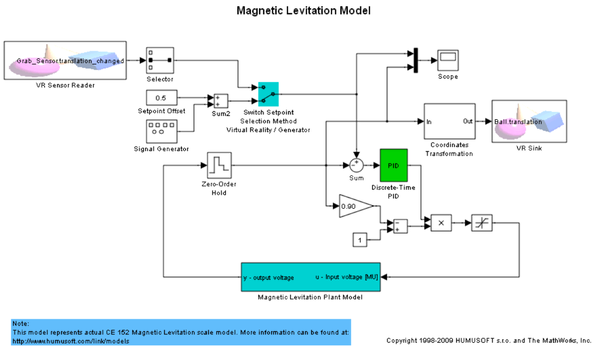
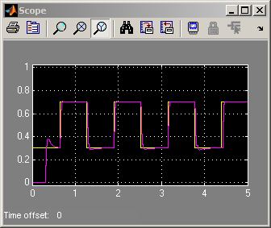
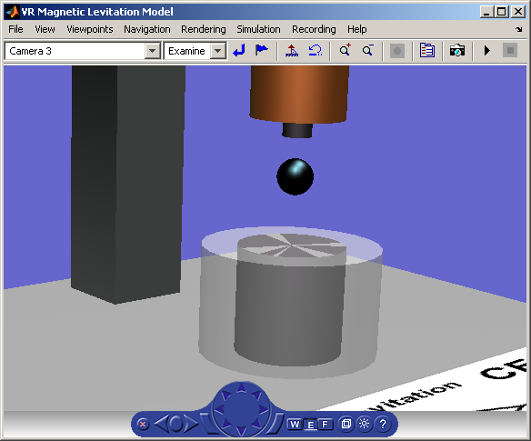

Magnetic Levitation Model
vrmaglev is an example showing the interaction between dynamic models in Simulink® and virtual worlds. The Simulink® model represents the HUMUSOFT® CE152 Magnetic Levitation educational / presentation scale model. (http://www.humusoft.com/link/models)
The plant model is controlled by a PID controller with feed forward to cope with the nonlinearity of the magnetic levitation system.
The position of the ball responds to the changing value of the setpoint. You can observe this change not only in the Scope window, but also in a viewer window displaying the virtual world. Note that the position of the ball represents the real dynamics of the system. If you switch the VRML viewer to the Camera 3 viewpoint, you can observe and control the ball easier.
  